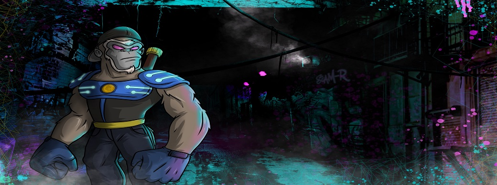

Information Risk Management
The International Organization for Standardization offers the framework for an Information Security Management System (ISMS) and as the name implies, they are working towards global standardization of good information security. Given that the ISO/IEC 27001:2013 module is 34 pages long and all the other resources given out in the lecture I have decided to attemp a brief first-party audit on my project using the framework in task four of the TryHackMe room.
Let’s start with what my project is. I have a decentralized finance or De-Fi platform that is aimed at educating people on how to be safer while navigating the space. With blockchain technology being adopted by massive tech and financial companies it is a new emerging market. The product I have ready right now is a KYC/AML solution that could be used by any De-Fi protocol. However decentralized means people want to stay anonymous and protect their identity. My solution allows for project owners to verify themselves and their address yet remain anonymous, except to the person that processes the check. I can even ad an extra layer of verification and verify a bank account to show proof of funding. The current standard of KYC/AML providers in this sector and is easily defrauded.
Internally there are five people working on the project. Externally I have five suppliers, a media company, GBG my KYC/AML provider, Cloudflare, OVHcloud and Google. I am responsible as a company director to the UK government and registered with the ICO as a data protection officer. Since I am the leadership, I am fully committed to the ISMS and have shown this by registering with the relevant bodies. De-Fi is currently a very unregulated space. I am the only internal person with access to any computer system within the organization, I have root access to the server and access to the client side of GBGs verification system. Externally the media company have control of the server through Cpanel, with OVHcloud I am responsible for server security, GBG have control of their own servers and ISMS as do Google and Cloudflare. No other access roles are to be given to anyone in the immediate future. The scope of this information security management system is to protect future client’s personal information and to protect company data from becoming compromised.
The information security plan I have is to not just limit what information is passed through my servers but negate them completely for the verification process. The only personal information stored on my server would be an email address if the user were to contact directly through the website or subscribe to the mailing list, for this I have used Cloudflare Pro for its added security features. The verification process starts by filling out a google form requesting a KYC where they supply at least the project owners name, address and email, this will be deleted after use. I will run a soft check on LoqateGBG against the address and email to check that they exist and are active. Once completed I will contact the client and send them a link for an app called Credas that is used to verify who that person is and where they live, it will even scan chipped passports to verify what is shown in the picture matches. Then that information is compiled into a report for me to view on the GBG dashboard where I can then manually approve or deny the application, I do have the option to download the results but a part of my information security plan that is not required as I can retrieve it for law enforcement bodies if requested or submitted in a criminal complaint myself if fraud is committed. The verification with GBG includes assisted image capture, biometric analysis, liveness checks, video recording, sanction screening, address verification, email verification and phone number verification however this is all stored on their highly secure infrastructure. Then the final verification will take place in a recorded google meeting where the client will read a disclaimer on camera, explain their role in the project and crypto wallet ownership confirmation by accepting a small transaction and then returning it while sharing the screen. This part is mostly evidence gathering in case of fraud. The recording will then be stored on a secure external storage device and deleted from the recording device. This is the entire process. All documents relating to the company are also stored on a secure external storage device to again limit the chance of a sensitive information breach. The media companies’ access is for website content management, and they are under a very strict non-disclosure agreement with me.
What are the vulnerabilities? Well, I am the biggest vulnerability in the system having access to everything, but it is not my intention to attack my own work so a low risk. The website only stores email addresses and has adequate security for its purpose so also low risk. Verification procedure stored on a reputable third-party infrastructure so low risk. Video recording stored securely offline so low risk and the sensitive company information is also stored offline on a separate drive so low risk. Different strong passwords across all database logins so low risk. This is my first time trying to follow this framework and attempting a quantitative estimate, so with this based on treat levels or low (1), medium (2) or high (3) and a lower score indicating lower risk. With six vulnerabilities all low it gets a score of 6.
I would be alerted of any incident response required from GBG should they have a data breach and any other incidents I would be made aware of with email notifications and act accordingly. Improvements can be made by upgrading my own infrastructure and run apis but I felt this was leading away from the decentralized aspect too much. I picked the best partners after months of research to be the best. GBG do KYC/AML checks for the UK government and Coinbase after all.